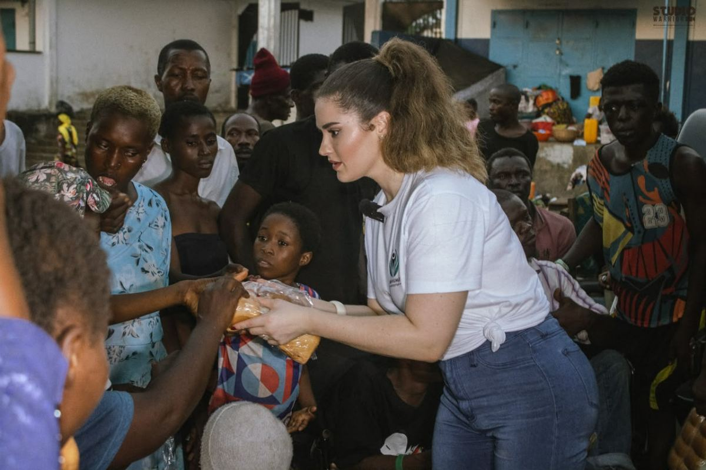
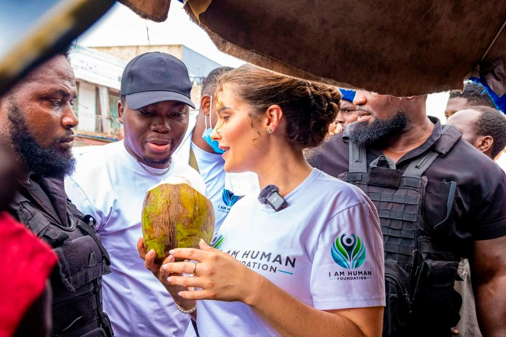
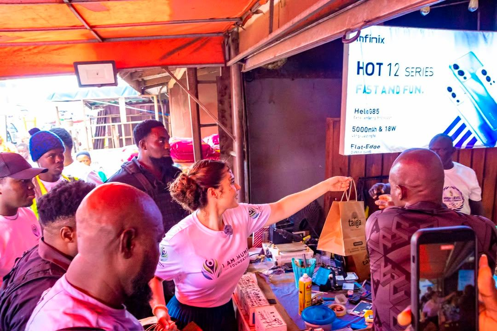
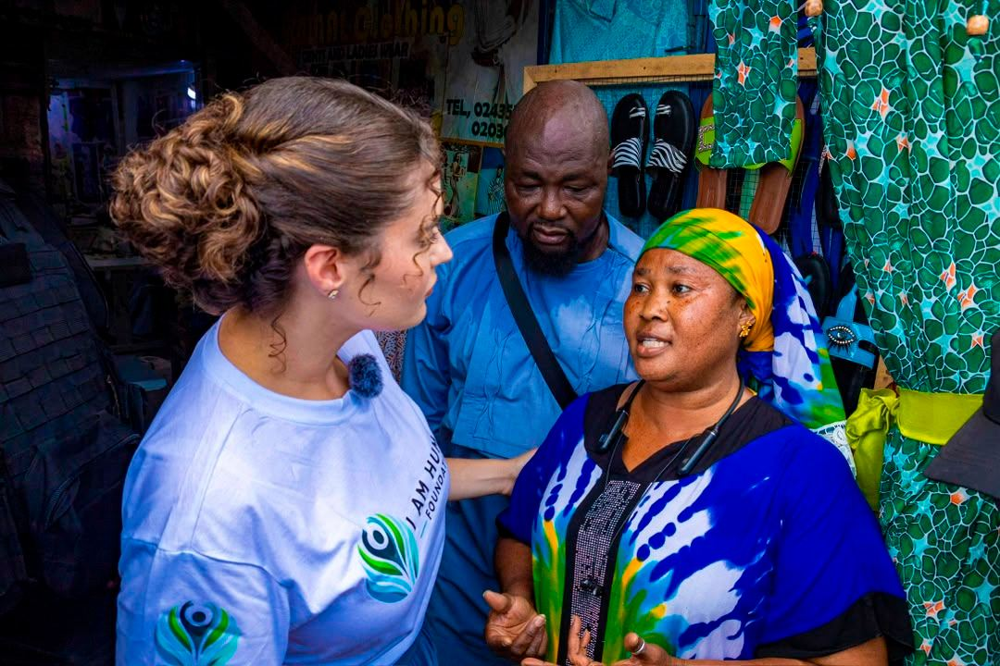
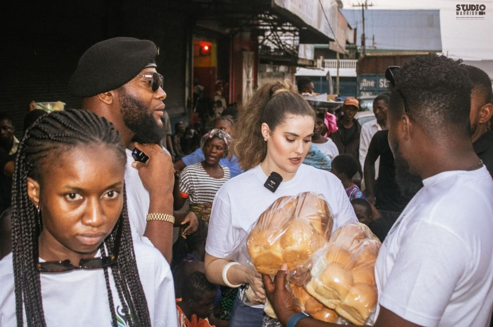
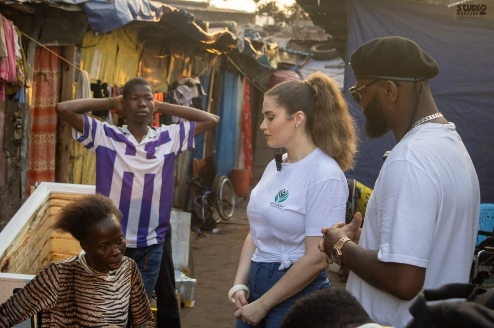
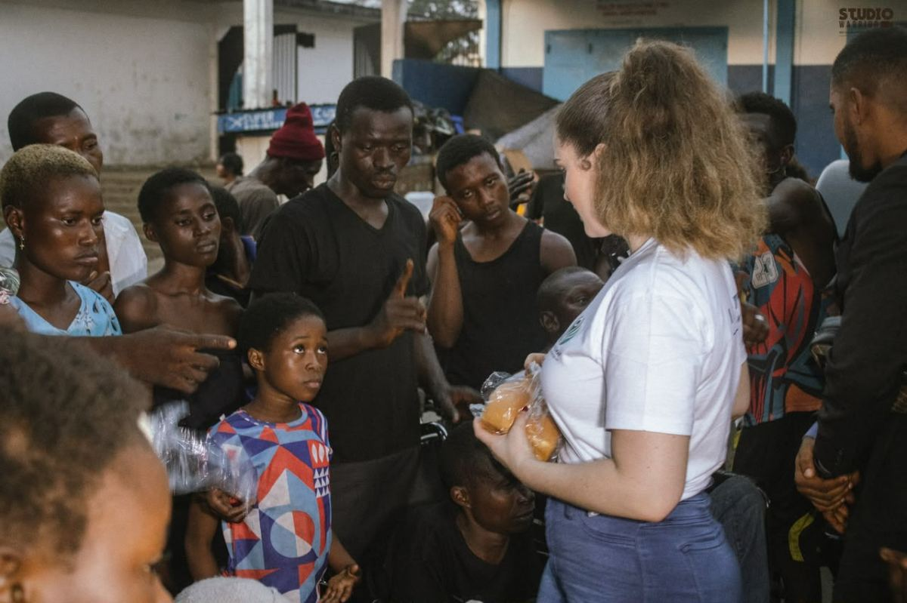
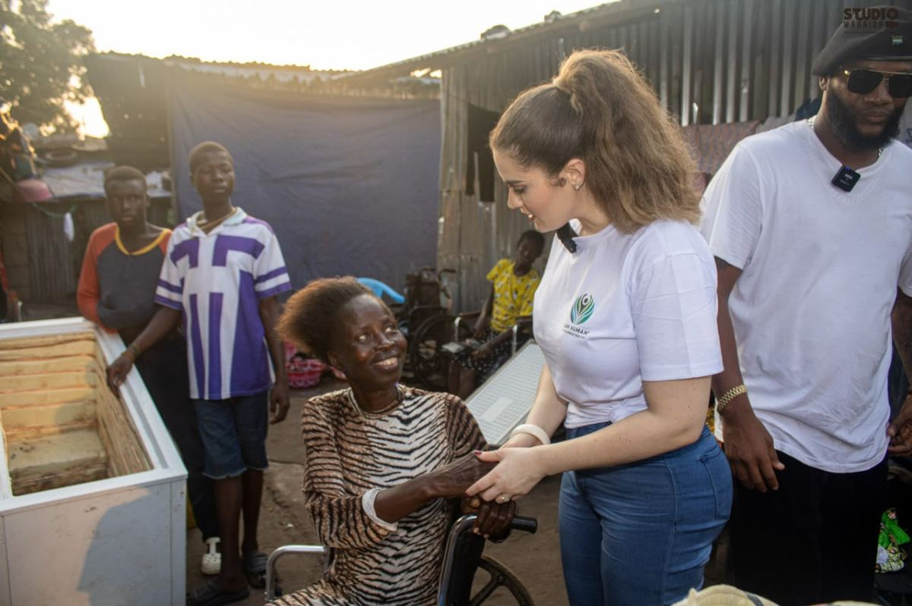

Give
Turn Compassion Into Action
Your contribution helps bring dignity, justice, essential support, and hope to people and communities who need it most.
-
Bank Transfer
Direct transfer to the foundation’s account. Ideal for larger or recurring gifts, and the option that carries no platform fees.
- Account Name
- I Am Human
- IBAN
- BE74 9735 0897 5707
-
Most popular
GoFundMe
Give securely by card in a few seconds, and share the campaign with people who care. The fastest way to help today.
Donate via GoFundMegofund.me/ff43f723
-
Tickets
Join us at the Launch Dinner — your seat directly supports the foundation’s first projects, and you get an evening out of it.
Buy Launch Dinner Ticketiamhumanfdn.org
Every contribution goes towards advocacy, essential needs, and community projects. For questions about giving, get in touch.
Where it goes
What your gift supports
Contributions are directed to the four pillars of our mission. As projects begin, we will report on what each one received and what it achieved.
-
Advocacy & Justice
Standing against arbitrary detention, abuse of power, discrimination, and injustice — including legal support and case monitoring.
-
Essential Needs
Clean water, healthcare, education, and dignified living conditions for communities currently going without.
-
Community Empowerment
Education, support, charity, and opportunity delivered so that the benefit stays with the community.
-
Tailored Local Impact
The scoping, listening, and local partnership work that makes sure a project actually fits the place it is built for.
Beyond giving
Other ways to help
-
Share the campaign
Send the GoFundMe to five people who would care. Reach is the one thing a young foundation cannot buy.
-
Attend the Launch Dinner
Take a seat, or book a table for your organisation. An evening of dinner, drinks, performances and storytelling.
-
Partner with us
Organisations, businesses, and community groups who share the mission — we would like to hear from you.
-
Fundraise for us
Birthdays, runs, workplace collections. If you want to raise for the foundation, tell us and we will support you.
Questions about donating
Which giving method is best?
Bank transfer carries no platform fee, so more of your gift reaches the work — it is the best option for larger or recurring donations. GoFundMe is faster and easier to share, which makes it the better option for one-off gifts and for spreading the campaign.
Can I set up a recurring donation?
Yes — a standing order to the bank details above is the simplest way. If you would like to arrange something regular, contact us and we will help you set it up.
Is my donation tax-deductible?
Tax treatment depends on where you are resident and on the foundation’s registration status in that country. Please contact us before assuming deductibility, and we will confirm what applies to your situation.
Can I choose which project my donation supports?
For larger gifts, yes — tell us which pillar or project you want to support and we will direct it accordingly. For general donations, funds go where they are most needed across the four pillars.
How will I know what my donation achieved?
We report on what we raise and what it goes towards as projects begin, including the parts that do not go to plan. Our projects page is where those updates will appear.

Your contribution becomes something a person can hold in their hands.
Where it goesFunded by supporters
What giving turns into
Every distribution, meeting and programme on this page was made possible by people who gave.







Compassion is a feeling. Action is a decision.
Whatever you can give, it moves this work forward.